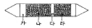
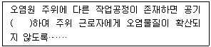
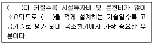

산업위생관리산업기사 (2005-03-20 기출문제)
1과목: 산업위생학 개론
1. 다음 중 바람직한 교대제에 속하지 않는 것은?
- 야간 근무시 가면은 반드시 필요하다.
- 야근 후 다음 반으로 가는 간격은 최고 48시간을 갖는 것이 좋다.
- 각 반의 근무시간은 8시간이 좋다.
- 야간근무는 2-3일 이상 연속하지 않는 것이 좋다.
(정답률: 37%)

2. 산업피로에 관한 설명으로 알맞지 않은 것은?
- 곤비는 과로의 축적으로 단기간에 회복될 수 없는 단계를 말한다.
- 국소피로와 전신피로는 신체피로 부위의 크기로 구분한다.
- 피로는 비가역적인 생체의 변화로 건강장해의 일종이다.
- 정신적피로, 신체적피로는 보통 함께 나타나 구별하기 어렵다.
(정답률: 57%)
3. 지방 1g이 체내에서 산화 연소될 때 발생되는 열량은?
- 9kcal
- 19kcal
- 29kcal
- 39kcal
(정답률: 46%)
4. 인류 역사상 최초로 기록된 직업병은?
- 납중독
- 구리광산의 산증기
- 카드뮴중독
- 진폐증
(정답률: 75%)
5. 직업성 요통 발생에 관여되는 요인 중 거리가 먼 것은?
- 근로자의 육체적 조건
- 작업장의 소음 및 진동
- 작업습관과 개인의 생활태도
- 물리적 환경요인(작업빈도, 물체의 위치, 무게, 크기 등)
(정답률: 알수없음)
6. 일반적으로 소음계는 주파수에 따른 사람의 느낌을 감안하여 A, B, C특성에서 음압을 측정할 수 있도록 보정되어 있다. 이중 A특성치는 다음중 어느 등감곡선과 비슷하게 반응을 보정한 것인가?
- 40phon
- 70phon
- 100phon
- 120phon
(정답률: 50%)
7. 근로자가 운동할 때의 산소 소비량(oxygen uptake)은 약 얼마까지 증가하는가?
- 약 0.25 L/min
- 약 2.5 L/min
- 약 5.0 L/min
- 약 10.0 L/min
(정답률: 75%)
8. 국소피로를 평가하는 데는 근전도(EMG)를 많이 이용한다. 정상근육과 비교하여 피로한 근육에서 나타나는 EMG의 특징이 아닌 것은?
- 총전압의 증가
- 평균주파수의 감소
- 저주파수(0∼40㎐) 힘의 증가
- 고주파수(40∼200㎐) 힘의 증가
(정답률: 64%)
9. 중량물 취급 작업에 대한 미국국립산업안전보건연구원(NIOSH)의 기준을 적용할 때, 적용범위에 해당되지 않는 것은?
- 보통 속도로 한 손으로 들어올리는 작업인 경우
- 물체의 폭이 75㎝이하인 경우
- 신발이 작업장 바닥에 닿을 때 미끄럽지 않을 경우
- 작업장내의 온도가 적절한 경우
(정답률: 알수없음)
10. 산업재해를 나타내는 지표 중 상해정도를 파악하기 위한 재해지표로 가장 적절한 것은?
- 도수율
- 건수율
- 강도율
- 손실율
(정답률: 42%)
11. 미국국립산업안전보건연구원(NIOSH)에서는 중량물 취급작업에 대하여 감시기준(AL)과 최대허용 기준(MPL)의 두가지 권고치를 설정하였다. 감시기준(AL)이 40kg일 때 최대허용기준(MPL)은?
- 60kg
- 80kg
- 120kg
- 160kg
(정답률: 92%)
12. 생물학적 노출지수(BEIs)에 관한 설명이다. 잘못된 것은?
- 유해물질의 대사산물, 유해물질 자체 및 생화학적변화 등을 측정한다.
- 시료는 소변, 호기 및 혈액 등이 주로 이용된다.
- 혈액에서 휘발성 물질의 생물학적 노출지수는 동맥 중의 농도를 말한다.
- 배출이 빠르고 반감기가 5분 이내의 물질에 대해서는 시료 채취시기가 대단히 중요하다.
(정답률: 47%)
13. 다음 중 전신피로의 원인이 아닌 것은?
- 산소 공급 부족
- 혈중 젖산 농도 저하
- 혈중 포도당 농도 저하
- 근육내 글리코겐량의 감소
(정답률: 37%)
14. 우리나라에서 "산업안전보건법"이 별도의 법률로 제정된 연도는?
- 1963년
- 1969년
- 1977년
- 1981년
(정답률: 70%)
15. 어느 공장의 월평균 종업원수는 500명이고, 년근로시간수는 10만시간, 재해건수가 2건, 작업손실일수가 50일이라면 이 공장의 도수율은?
- 0.02
- 4
- 20
- 500
(정답률: 알수없음)
16. '산업보건역학'이 실제로 활용되는 분야와 거리가 먼것은?
- 직업병 원인 색출
- 직업성 질환의 확인
- 폭로-반응관계의 규명
- 호흡용 보호구의 수명측정
(정답률: 34%)
17. 고온 다습한 작업환경에서 격심한 노동을 하는 사람의 식사법으로 틀린 것은?
- 식사횟수를 늘린다.
- 기름진 음식을 위주로 한다.
- 조리에 색채감을 준다.
- 적당한 휴식후에 식사를 한다.
(정답률: 59%)
18. 1755년 굴뚝 청소부 소년에게서 최초의 직업성 암을 보고 한 사람은?
- 포트(Percival Pott)
- 로리가(Loriga)
- 페텐코퍼(Max Von Pettenkoffer)
- 테일러(Tayler)
(정답률: 58%)
19. 어떤 작업의 강도를 알기 위하여 작업시 소요된 열량을 파악한 결과 3400kcal로 나타났다. 기초대사량이 1200kcal, 안정시 열량이 기초대사량의 1.2배인 경우 작업대사율(RMR)은?
- 1.53
- 1.63
- 1.73
- 1.83
(정답률: 50%)
20. 작업강도를 작업대사율과 실동율에 의하여 분류하였다. 잘못 짝지워진 것은?
- 경작업 : 작업대사율 0-1, 실동율 80% 이상
- 중등작업 : 작업대사율 1-2, 실동율 80-76%
- 강작업 : 작업대사율 4-7, 실동율 : 67-50%
- 격심작업 : 작업대사율 7이상, 실동율 : 50% 이하
(정답률: 알수없음)
2과목: 작업환경측정 및 평가
21. '물질을 취급 또는 보관하는 동안에 기체 또는 미생물이 침입하지 않도록 내용물을 보호하는 용기'는?
- 밀폐용기
- 밀봉용기
- 기밀용기
- 차광용기
(정답률: 54%)
22. 용매 추출법에 있어서 추출 용매의 선택에 대한 설명 중 옳지 않은 것은?
- 금속 이온의 회수가 쉬운 용매일 것
- 수층과 현탁을 일으키지 않는 용매일 것
- 수층과 비중차가 적은 용매일 것
- 추출된 금속이온이 용매 중에서 화학적으로 안정할 것
(정답률: 알수없음)
23. 원자흡광광도 분석장치의 구성순서로 알맞은 것은?
- 시료원자화부→단색화부→광원부→측광부
- 단색화부→측광부→시료원자화부→광원부
- 광원부→시료원자화부→단색화부→측광부
- 측광부→단색화부→광원부→시료원자화부
(정답률: 32%)
24. 인간의 감각량과 가까우며 일반소음을 측정할 때 사용되는 특성단위는?
- ㏈(A)
- ㏈(B)
- ㏈(C)
- ㏈(D)
(정답률: 알수없음)
25. 제철공장의 작업환경 공기를 측정하였더니 분자량 78인 벤젠이 8ppm 이었다. 이 농도는 ㎎/m3 로 얼마인가? (단, 작업장의 기온은 25℃, 기압은 1atm이다.)
- 20.6
- 22.3
- 25.5
- 27.9
(정답률: 43%)
26. 허용농도가 100ppm인 톨루엔 취급 작업을 하루 10시간 근무한다면 보정허용농도치는? (단, Brief 와 Scala의 보정방법 적용)
- 50ppm
- 60ppm
- 70ppm
- 80ppm
(정답률: 43%)
27. 일반적으로 금속먼지나 흄을 채취하는 여재로 알맞는 것은?
- 직경이 27mm이고 구멍의 크기가 1.0㎛인 MCE 막여과지
- 직경이 37mm이고 구멍의 크기가 0.8㎛인 MCE 막여과지
- 직경이 47mm이고 구멍의 크기가 0.5㎛인 MCE 막여과지
- 직경이 57mm이고 구멍의 크기가 0.3㎛인 MCE 막여과지
(정답률: 19%)
28. 주물공장내에서 비산되는 분진을 측정하기 위해서 Low Volume air sampler을 사용하였다. 분당 30ℓ로 30분간 포집하여 여지를 건조시킨후, 측량한 결과 22.46㎎이었다. 주물공장내 분진의 농도는 약 얼마인가? (단, 포집전의 여지의 무게는 17.66㎎ )
- 0.53㎎/m3
- 5.3㎎/m3
- 0.88㎎/m3
- 8.8㎎/m3
(정답률: 64%)
29. 유량, 측정시간, 회수율 및 분석 등에 의한 오차가 각각 15, 3, 9 및 5%일 때 누적오차(%)는?
- 15.4
- 16.9
- 17.5
- 18.4
(정답률: 알수없음)
30. 작업환경내의 자연습구온도가 20℃이고 흑구온도가 20℃이다. 이러한 작업환경의 옥내 WBGT는?
- 10℃
- 15℃
- 20℃
- 25℃
(정답률: 84%)
31. 표준크기의 활성탄 관의 모형에서 틀린 것은?

- 글라스 울
- 활성탄 100㎎
- 우레탄 홈
- 활성탄 20㎎
(정답률: 23%)
32. 여과포집에 사용되는 여과재의 조건으로 틀린 것은?
- 포집대상 입자의 입도분포에 대하여 포집효율이 높을 것
- 포집시의 흡인저항은 될 수 있는 대로 낮을 것
- 충분한 흡습률을 유지할 것
- 될 수 있는 대로 가볍고 1매당 무게의 불균형이 적을 것
(정답률: 64%)
33. 톨루엔, 크실렌, 아세톤이 서로 비슷한 영향을 주는 상가작용 물질이라면 공기중에 톨루엔(TLV=100ppm) 50ppm, 크실렌(TLV=100ppm) 80ppm, 아세톤(TLV=750ppm) 1000ppm으로 측정되었다면 이 작업 환경의 허용기준농도는?
- 약 430 ppm
- 약 490 ppm
- 약 550 ppm
- 약 580 ppm
(정답률: 10%)
34. 0℃, 2atm 에서 H2 10L 는 273℃, 380㎜Hg 상태에서 몇 L 인가?
- 60L
- 70L
- 80L
- 90L
(정답률: 알수없음)
35. H2SO4(MW = 98) 4.9g이 100ℓ의 수용액속에 용해되었을 때 이 용액의 pH는? (단, 황산은 100% 전리한다.)
- 4
- 3
- 2
- 1
(정답률: 47%)
36. 작업환경측정을 위한 시료포집법의 종류와 가장 거리가 먼것은? (단, 포집=채취)
- 액체포집법
- 고체포집법
- 회화포집법
- 직접포집법
(정답률: 50%)
37. 투과도가 30%인 경우 흡광도는?
- 0.47
- 0.52
- 0.63
- 0.74
(정답률: 80%)
38. 부피비로 0.⑤%는 몇 ppm 인가?
- 50ppm
- 500ppm
- 5,000ppm
- 50,000ppm
(정답률: 82%)
39. 허용농도에서 유해물질의 이름 앞에 'C'표시가 있는데 이것의 의미는?
- 1일 8시간 평균농도
- 어떤 시점에서도 동수치를 넘어서는 안된다는 상한치
- 1일 15분 평균농도
- 피부로 흡수되어 정신적 영향을 줄 수 있는 농도
(정답률: 54%)
40. 작업환경 시료 채취방법으로 액체포집 방법이 있는데 액체 포집방법에 주로 사용되는 기구는? (단, 포집=채취)
- 실리카겔(silical gel)
- 필터(filter)
- 활성탄튜브(charcoal tube)
- 임핀져(impinger)
(정답률: 알수없음)
3과목: 작업환경관리
41. 진동공구의 무게는 몇 ㎏을 초과하지 않는 것이 좋은가?
- 10㎏
- 15㎏
- 20㎏
- 25㎏
(정답률: 알수없음)
42. 진동은 수직, 수평진동으로 나누어지는데 인간에게 민감하게 반응을 보이며 영향이 큰 진동수는 수직진동과 수평진동에서 각각 몇 ㎐인가? (단, 수직, 수평진동 순서)
- 4.0 - 8.0, 2.0 이하
- 2.0 이하, 4.0 - 8.0
- 8.0 - 10.0, 4.0 이하
- 4.0 이하, 8.0 - 10.0
(정답률: 알수없음)
43. 다음 중 작업환경 개선의 기본원칙과 거리가 먼 것은?
- 대치(substition)
- 교육(education)
- 환기(ventilation)
- 휴식(recreation)
(정답률: 37%)
44. 방진마스크에 대한 설명 중 적합하지 않은 것은?
- 고체의 분진이나 유해성의 fume, mist 등의 액체 입자의 흡입방지를 위해서도 사용된다.
- 필터는 여과효율이 높고 흡입저항이 큰 것이 좋다.
- 충분한 산소가 있고 유해물의 농도가 규정이하의 농도일 때 사용할 수 있다.
- 필터의 재질로는 합성섬유, 유리섬유 및 금속 섬유 등이 사용된다.
(정답률: 알수없음)
45. 귀마개에 관한 설명으로 틀린 것은? (단, 귀덮개와 비교함)
- 부피가 작아서 휴대하기가 편리하다.
- 좁은 장소에서 머리를 많이 움직이는 작업을 할 때 사용하기 편리하다.
- 제대로 착용하는데 시간이 걸리고 요령을 습득하여야 한다.
- 일반적으로 차음효과가 우수하다.
(정답률: 50%)
46. 동상에 관한 설명으로 알맞지 않는 것은?
- 피부동결은 이론상 0 ~ -2℃에서 발생된다.
- 제2도 동상의 경우는 수포를 가진 광범위한 삼출성염증이 발생한다.
- 혹한환경에서 심부조직까지 동결되면 조직의 괴사와 괴저가 일어난다.
- 발가락은 6℃이하에서 시린 느낌이 생기고, 2℃이하가 되면 아픔을 느낀다.
(정답률: 알수없음)
47. 종말기관지 및 폐포점막 자극제와 가장 거리가 먼 것은?
- 이산화질소
- 3염화비소
- 포스겐
- 산화에틸렌
(정답률: 알수없음)
48. 전리복사선 중 입자상의 복사선이 아닌 것은?
- 알파선
- 베타선
- 감마선
- 중성자
(정답률: 50%)
49. 고온환경에서 육체노동에 종사할 때 일어나기 쉬운 열적 장해로 말초혈관 확장에 따른 요구 증대만큼의 혈관운동조절이나 심박출력의 증대가 없을 때 또는 탈수로 말미암아 혈장량이 감소할 때 발생되는 것은?
- 열경련
- 열사병
- 열쇠약
- 열피로
(정답률: 24%)
50. 감압에 따른 기포형성량을 좌우하는 요인 중 조직에 용해된 가스량을 결정하는 것은?
- 혈류를 변화시키는 상태
- 감압속도
- 고기압 폭로의 정도와 체내 지방량
- 연령, 기온, 운동, 공포감, 음주상태
(정답률: 알수없음)
51. X선을 공기 1cm3에 조사해서 발생한 ion에 의하여 1정전 단위의 전기량이 운반되는 선량을 1로 나타내는 단위는?
- 퀴리(Ci)
- 렘(Rem)
- RBE
- 렌트겐(R)
(정답률: 알수없음)
52. 도장작업 근로자의 생물학적 모니터링을 하여보니 소변중에서 마뇨산이 다량 검출되었다. 이 근로자는 다음중 어떤 화학물질에 폭로 되었을 것이라 생각 할 수 있는가?
- 이황화탄소
- 크실렌
- 벤젠
- 톨루엔
(정답률: 50%)
53. 유기성분진에 의한 진폐증은?
- 규폐증
- 용접공폐증
- 농부폐증
- 흑연폐증
(정답률: 70%)
54. 작업장내에서 발생된 두물질의 상대적 독성(수치는 독성의 크기)이 2 + 0 → 10로 나타날 때의 화학적 상호작용은?
- 상가작용(additive action)
- 상승작용(synergism)
- 가승작용(potentiation)
- 길항작용(antagonism)
(정답률: 28%)
55. 화학적 유해물질을 작용특성에 따라 분류할 때 생리적 작용에 의한 분류로 볼 수 없는 것은?
- 마취제
- 전신중독제
- 제산제
- 자극제
(정답률: 알수없음)
56. 레이노드 현상(Raynaud's Phenomenon)은 다음 중에서 어느 것에 의해 일어나는 건강 장해인가?
- 조명
- 소음
- 기압
- 진동
(정답률: 알수없음)
57. 진동의 크기를 나타내는 속도에 관한 설명으로 올바른 것은?
- 물체가 정상 정지위치에서 일정시간내에 도달하는 위치까지의 거리를 말한다.
- 진동체가 진동의 상한 또는 하한에 도달하면 속도는 0 이다.
- 가속도의 시간변화율로 중력단위로 표시한다.
- 외부에서 발생한 진동에 맞춰서 생체가 진동하는 성질을 가리키며 실제로는 진동이 증폭된다.
(정답률: 알수없음)
58. 벤젠의 만성중독에 의한 특이증상으로 가장 적절한 것은?
- 조혈기관의 장해
- 간장 및 신장의 장해
- 중추신경장해
- 피부장해
(정답률: 62%)
59. 저온에 의한 2차적인 생리반응을 맞게 설명한 것은?
- 저온환경에서는 조직대사가 증가되어 식욕이 떨어진다.
- 저온환경에서는 근육활동이 감소하여 식욕이 떨어진다.
- 말초혈관이 확장되어 표면조직의 냉각을 제어한다.
- 피부혈관 수축으로 순환능력이 감소되어 상대적으로 혈류량이 증가하므로 혈압이 일시적으로 상승한다.
(정답률: 19%)
60. 작업장의 이상적인 채광을 위해서 창의 면적은 방바닥 면적의 몇 %로 하는 것이 가장 좋은가?
- 5-10%
- 15-20%
- 20-35%
- 35-50%
(정답률: 58%)
4과목: 산업환기
61. 터빈 날개가 기류에 의하여 회전하는 속도를 이용하여 유량을 측정하는 기류계는?
- vane anemometer
- dry kata thermometer
- hot wire anemometer
- heated thermocouple anemometer
(정답률: 38%)
62. 푸쉬-풀 후드(push-pull hood)에 대한 설명으로 적합하지 않는 것은?
- 필요배기량을 줄일 수 있다.
- 흡입해주는 후드와 불어주는 노즐로 구성된다.
- 제어속도는 푸쉬 제트기류에 의해 발생한다.
- 폭이 좁은 도금조에 효과적이다.
(정답률: 40%)
63. 아래에 언급된 전체환기시설 설치 기본원칙 내용중 ( )안에 알맞는 것은?

- 배출량을 공급량보다 크게 늘려, 양압을 형성
- 공급량을 배출량보다 크게 늘려, 음압을 형성
- 배출량을 공급량보다 약간 크게 하여, 음압을 형성
- 공급량을 배출량보다 약간 크게 하여, 양압을 형성
(정답률: 알수없음)
64. 송풍기의 전압이 102㎜H2O이고, 풍량이 120m3/min, 효율이 0.7일 때 소요동력(㎾)은? (단, 안전률: 1.5)
- 1.88
- 2.66
- 2.86
- 4.29
(정답률: 9%)
65. 후드 입구의 가로-세로비가 0.2이하로 특징지어지는 후드로 가장 적절한 것은?
- 캐노피 후드
- 레시버식 후드
- 슬롯형 후드
- 푸쉬-풀 후드
(정답률: 알수없음)
66. 일반적으로 덕트내의 반송속도를 가장 크게 해야하는 오염물은?
- 곡분, 고무분
- 각종가스, 증기
- 목재분진
- 주물, 주조작업 분진
(정답률: 알수없음)
67. 후드의 유입계수가 0.8, 덕트내의 공기흐름속도가 20m/s 일 때 후드의 압력손실은? (단, 공기의 비중:1.2)
- 약 10㎜H2O
- 약 14㎜H2O
- 약 18㎜H2O
- 약 21㎜H2O
(정답률: 알수없음)
68. 중력침강에 의한 제진효율를 설명한 것이다. 틀린 것은? (단, 스토크 직경 기준)
- 입자직경의 제곱에 비례한다.
- 가스의 밀도차에 반비례한다.
- 중력가속도에 비례한다.
- 가스의 점성도에 반비례한다.
(정답률: 25%)
69. 다음 중 입자상 물질의 원심력을 집진장치에 주로 이용하는 공기정화 장치는?
- 침강실
- 백휠터(bag filter)
- 벤츄리스크러버
- 싸이크론
(정답률: 알수없음)
70. 다음의 송풍기 중에서 풍압이 바뀌어도 풍량의 변화가 비교적 작고 병렬해도 풍량에는 지장이 없으며 동력특성의 상승도 완만하여 어느 정도 올라가면 포화되는 현상이 있기 때문에 소요풍압이 떨어져도 마력은 크게 올라가지 않는 이점이 있는 송풍기로 가장 적절한 것은?
- 다익 송풍기
- 터보 송풍기
- 평판 송풍기
- 축류 송풍기
(정답률: 알수없음)
71. 유해가스처리를 위한 흡수법에 관한 설명으로 알맞지 않은 것은?
- 헨리법칙에 잘 적용되는 기체는 용해도가 큰 암모니아, 불화수소 등이다.
- 유해가스가 액상에 잘 용해되는 성질을 이용한다.
- 제거효율은 접촉시간, 기액접촉면적, 흡수제의 농도, 반응속도에 지배를 받는다.
- 헨리법칙은 기상농도와 액상농도와의 평형관계를 나타낸 것이다.
(정답률: 46%)
72. 가스상 오염물질을 처리하기 위한 흡수법에서 사용하는 흡수액의 요건이 아닌 것은?
- 용해도가 높아야 한다.
- 증기압이 커야 한다.
- 화학적으로 안정해야 한다.
- 휘발성이 낮아야 한다.
(정답률: 20%)
73. 다음 ( )안에 가장 알맞는 내용은?

- 제어속도
- 포착속도
- 발생원과의 거리
- 필요송풍량
(정답률: 25%)
74. 레이놀즈(Reynolds)수 계산에 필요치 않은 것은?
- 동점성 계수
- 송풍관의 직경
- 유체의 속도
- 송풍관의 길이
(정답률: 알수없음)
75. 국소배기장치에서 공기공급시스템이 필요한 이유가 아닌것은?
- 국소배기장치를 적정하게 작동하기 위해서
- 작업장의 교차기류를 생성시키기 위해서
- 연료를 절약하기 위해서
- 안전사고를 예방하기 위해서
(정답률: 37%)
76. 전체환기는 외부의 신선한 공기를 작업장내로 유입시켜 작업 환경의 공기오염 정도를 낮추는 환기 기법이다. 전체환기 기법의 적용이 곤란한 경우는?
- 발생원이 움직인다.
- 유해가스의 독성이 낮다.
- 발생량이 많고 불균일하다.
- 발생원이 흩어져 있다.
(정답률: 50%)
77. 원형송풍관에서 필요배풍량 Q가 10m3/min이고 반송속도 υt가 16m/sec이다. 송풍관의 직경은?
- 8.4cm
- 11.5cm
- 18.4cm
- 21.6cm
(정답률: 32%)
78. 관내 속도압을 설명한 내용과 가장 거리가 먼 것은?
- 공기의 비중과 정비례
- 속도의 제곱에 비례
- 제어속도와 반비례
- 중력가속도와 반비례
(정답률: 알수없음)
79. 송풍기의 풍량 조절법에 속하지 않는 것은?
- 회전수 변화법
- Vane Control법
- Damper 부착법
- 송풍기 풍향 변경법
(정답률: 70%)
80. 다음 중 베르누이 정리를 가장 적절하게 설명한 것은?
- 압력은 체적에 반비례하고 절대온도에 비례한다.
- 관에 유발된 전체 외력의 합은 운동량 플럭스의 변화량과 같다.
- 압축성이며 점성이 있는 실제 유체의 정상류를 기준으로 한다.
- 유입된 에너지의 총량은 유출된 에너지의 총량과 같다.
(정답률: 알수없음)
"야근 후 다음 반으로 가는 간격은 최고 48시간을 갖는 것이 좋다."는 충분한 휴식을 취하고 건강을 유지하기 위해 필요하다. 너무 짧은 간격으로 근무를 이어나가면 체력이 저하되고, 생산성이 떨어지기 때문이다.